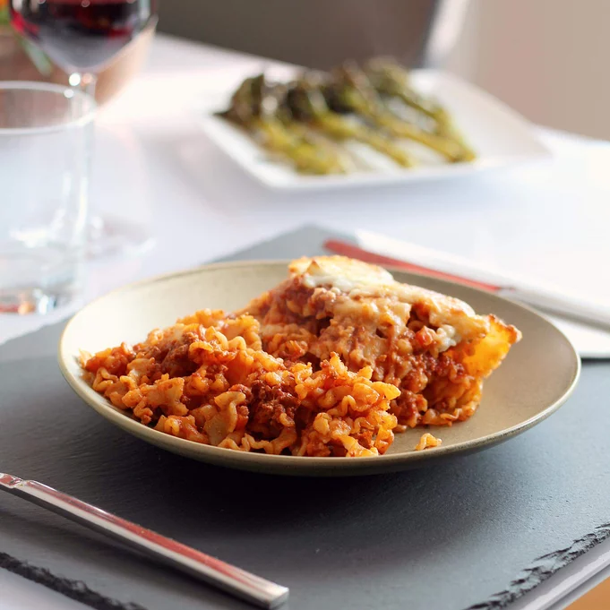

Lasagna

Description
sweet sweet lasagna
- ½ pound ground beef
- ½ (28 ounce) jar spaghetti sauce
- 1 (14.5 ounce) can diced tomatoes
- ½ onion, chopped
- 1 clove garlic, minced
steps
- Heat a large skillet over medium-high heat. Cook and stir beef in the hot skillet until browned and crumbly, 5 to 7 minutes. Drain and discard grease. Add spaghetti sauce, tomatoes, onion, garlic, basil, oregano, salt, and pepper. Cook over low heat until sauce is hot, about 15 minutes.
- Meanwhile, fill a large pot with lightly salted water and bring to a rolling boil. Cook mafalda noodles at a boil until tender yet firm to the bite, about 8 minutes. Drain.
- Add cooked and drained noodles to the sauce and stir until completely coated. Sprinkle mozzarella cheese on top.
- Set an oven rack about 6 inches from the heat source and pPlace skillet under the hot broil and cook until cheese is golden and bubbly, 3 to 5 minutes.